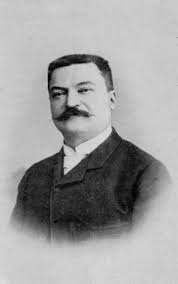
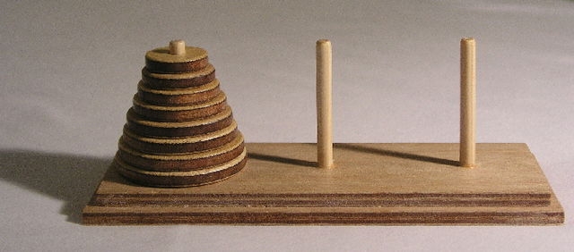

|  |
Il creatore della Torre di Hanoi è Édouard Lucas, un matematico e scrittore francese del XIX secolo. Lucas nacque il 4 aprile 1842 a Amiens, in Francia, e dimostrò un interesse precoce per la matematica. Diventò famoso per le sue numerose contribuzioni in diverse aree della matematica, tra cui la teoria dei numeri, la teoria dei giochi e la geometria. |
|
La storia leggendaria dietro la Torre di Hanoi coinvolgeva l'immaginazione di Lucas. Egli ipotizzava che ci fossero tre pioli di diamanti nel tempio di Brahma a Hanoi, Vietnam, su cui erano impilati 64 dischi d'oro di dimensioni diverse. I monaci del tempio erano incaricati di spostare tutti i dischi da un piolo all'altro, seguendo le regole del gioco, con la previsione che quando avessero completato il trasferimento dell'intera pila, il mondo sarebbe finito. |
 |